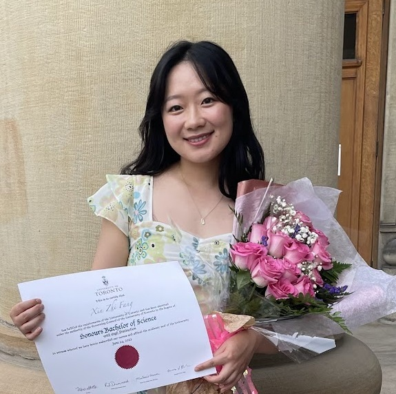

People
Current
Rotation students
| Grace Brooks | ScM student in Biostatistics interested in learning about research opportunities in spatial omics. |  |
Undergraduate students
| Xingyi (Daniel) Chen | Undergraduate student majoring in Applied Math and Statistics with a minor in computational medicine developing computational methods spatial omics data. |
ScM students
| Guan Gui | ScM student in Biostatistics developing deep learning algorithms for spatial omics data. | |
| Christine Hou | ScM student in Biostatistics developing APIs and computational methods for spatial omics data. |  |
| Shu Luan | ScM student in Biostatistics developing deep learning algorithms for spatial omics data. Jointly mentored with Brian Caffo. |  |
PhD students
| Alyssa Columbus | PhD student in Biostatistics and Vivien Thomas Scholar at Johns Hopkins University defining elements and principles for characterizing and evaluating data analyses. Jointly mentored with Brian Caffo. | |
| Cindy Fang | PhD candidate in Biostatistics developing computational methods for single-cell and spatial transcriptomics data. |  |
| Sowmya Parthiban | PhD student in Biostatistics developing computational methods and software for long-read RNA-sequencing. | |
| Kinnary Shah | PhD candidate in Biostatistics developing statistical inference tools for spatial transcriptomics data. | |
| Jianing Yao | PhD student in Biostatistics developing scalable clustering methods and software for spatial omics data. |
Postdocs
| Boyi Guo | Postdoc working on developing scalable statistical learning models for high-dimensional data analysis with emphasis on –omics applications. |  |
| Jacqueline R. Thompson | Postdoc leading spatially-resolved transcriptomic projects to understand mental health disorders. | |
| Michael Totty | Postdoc leading single-nucleus RNA-sequencing and spatially-resolved transcriptomic projects to understand human psychiatric disorders. NIH/NHMH F32 awardee. |
Alumni
Postdoc Alumni
- Lukas Weber | Assistant Professor, Boston University, Biostatistics | NIH/NHGRI K99/R00 awardee
- Wenpin Hou | Assistant Professor, Columbia, Biostatistics | NIH/NHGRI K99/R00 awardee
- Sean Maden
PhD Alumni
- Erik Nelson | 2024 | Next: Computational Biologist, Translational Omics at GSK
- Albert Kuo | 2022 | Next: Data Scientist, Amazon
Masters Alumni
- Weishan Li | 2024 | Next: PhD student, University of Colorado
- Haowen Zhou | 2023 | Next: PhD student, UC San Diego
- Jianing Yao | 2023 | Next: PhD student, Johns Hopkins
- Yongbao Zhuang | 2022 | Next: PhD student, Karolinska Institute
- Nathan Dyjack | 2021 | Next: Data Scientist, University of Alabama Birmingham Medical Center (Alumni Spotlight)
Rotation Alumni
- Caleb Hallinan | 2024
- Rafael dos Santos Peixoto | 2022
- Chaichontat Sriworarat | 2022
Undergraduate Alumni
- Yilin Chen | 2022
- Cynthia Lo | 2022
Past Research Assistants
- Michael Ontiveros
- Kexin (Sheena) Wang
- Ruoxi Liu
- Alexandra Stephens
- Hanchao (Ted) Zhang
- Pei-Lun (Perry) Kuo
Former Friends of the Lab (FFOL)
Visitors
- Andrea Sottosanti | 2022